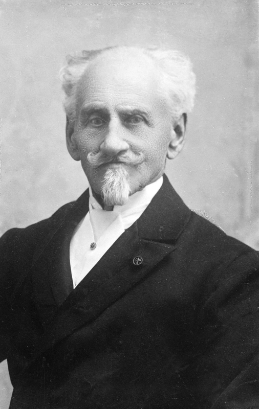
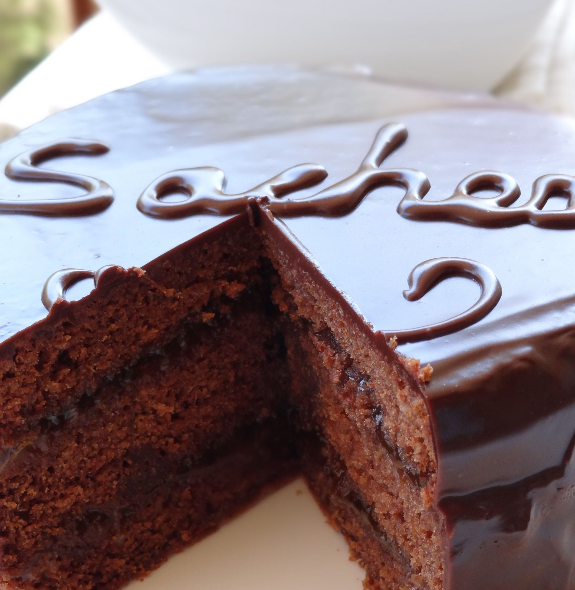

La Sachertorte, ctiene sus omienzos en 1832 en Austria cuando Franz Sacher, el aprendiz de pastelero del ministro de Asuntos Exteriores del país, improvisa para la recepción del canciller austriaco Klemens Wenzel Lothar von Metternich una tarta en la que el chocolate y la mermelada de albaricoque son los ingredientes estrella. Pasado un tiempo, y después de trabajar en Bratislava y en Budapest, Sacher volvió a Viena para abrir una tienda de dulces y vinos en donde, por supuesto, ofrecía este delicioso postre. En las siguientes imagenes se ilustra el creador de esta delicia y la torta en cuestión:


Ahora, adentrandonos a lo que realmente nos importa...
Lavamos bien los albaricoques y le quitamos el carozo, luego pesamos y añadimos la mitad del peso de los albaricoques de azúcar (por 500 gr. de fruta pondremos 250 gr. de azúcar). Añadimos un poco de jugo de limón y lo dejamos reposar durante unas horas para luego llevarlo al fuego. Por último trituramos bien y comprobamos que esté en su punto de espesor.
Enmantecamos el molde y resevamos.
Separamos las claras y reservamos las yemas.
Por otro lado montamos las claras con 70 gr. de azúcar hasta estén a punto de nieve. Reservamos hasta el momento de utilizar.
Batimos la mantequilla junto con otros 70 gr. de azúcar hasta que la mezcla blanquee.
Vamos añadiendo las yemas una a una, sin añadir la siguiente hasta que la anterior no se haya integrado completamente.
Derretimos el chocolate al baño María. Removemos bien para que las perlitas de chocolate se derritan por completo y para bajar un poco la temperatura del chocolate
Añadimos el chocolate derretido a la mezcla de mantequilla, yemas y azúcar y mezclamos bien hasta tener una mezcla completamente homogénea
Tamizamos la harina, el cacao en polvo (y la levadura en caso de añadirla) e incorporamos a la mezcla anterior en tres o cuatro veces con movimientos envolventes para no bajar la mezcla.
Por último añadimos las claras a punto de nieve que teníamos reservadas y mezclamos con movimientos suaves y envolventes hasta que no queden restos de clara.
Añadimos con cuidado la mezcla al molde previamente engrasado, alisamos la superficie de la masa e introducimos en el horno precalentado a 170º C durante unos 50 minutos o hasta que al pinchar con una brocheta ésta salga limpia.
Sacamos del horno, dejamos dentro del molde durante diez minutos y después desmoldamos. Dejamos enfriar totalmente durante unas horas sobre una rejilla enfriadora.
Primero preparamos un almíbar con el agua y el azúcar, retiramos del fuego y dejamos templar.
Por otro lado derretimos el chocolate a baño María y añadimos, junto con el cacao en polvo, al almíbar.
Luego removemos bien hasta que el glaseado esté liso y sin grumos.
Ponemos la tarta sobre la rejilla enfriadora con una bandeja o plato hondo debajo. Vertemos el glaseado de chocolate con cuidado sobre la tarta hasta cubrir totalmente la superficie y los laterales de la misma.
Dejamos que el chocolate solidifique a temperatura ambiente.
Si aún te que has quedado con dudas del paso a paso, no dejes de mirar el siguiente video en donde sale más detallado el paso a paso de esta gran preparación: